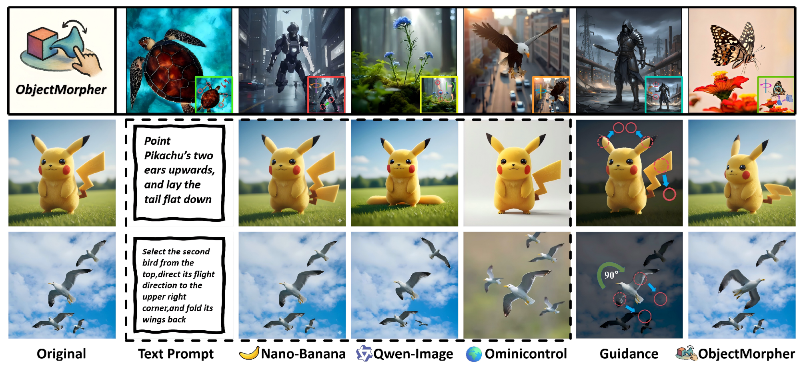
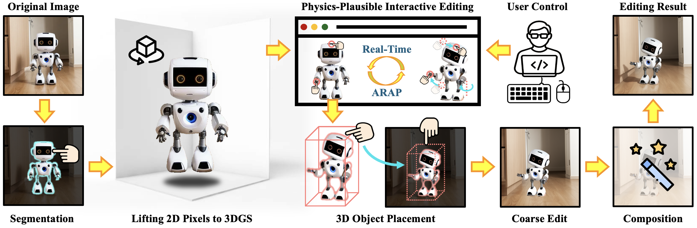
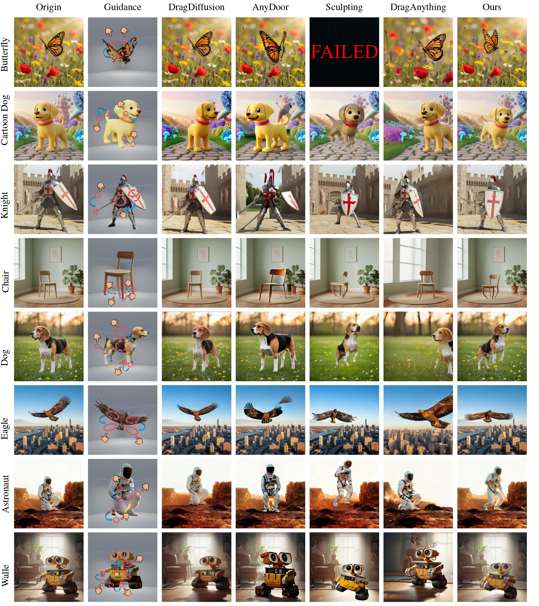

ObjectMorpher: 3D-Aware Image Editing via Deformable 3DGS Models

Abstract
Achieving precise, object-level control in image editing remains challenging: 2D methods lack 3D awareness and often yield ambiguous or implausible results, while existing 3D-aware approaches rely on heavy optimization or incomplete monocular reconstructions. We present ObjectMorpher, a unified, interactive framework that converts ambiguous 2D edits into geometry-grounded operations. ObjectMorpher lifts target instances with an image-to-3D generator into editable 3D Gaussian Splatting (3DGS), enabling fast, identity-preserving manipulation. Users drag control points; a graph-based non-rigid deformation with as-rigid-as-possible (ARAP) constraints ensures physically sensible shape and pose changes. A composite diffusion module harmonizes lighting, color, and boundaries for seamless reintegration. Across diverse categories, ObjectMorpher delivers fine-grained, photorealistic edits with superior controllability and efficiency, outperforming 2D drag and 3D-aware baselines on KID, LPIPS, SIFID, and user preference.
Pipeline
The object is lifted from 2D pixels to high-fidelity 3DGS. Real-time editing with local rigidity is applied based on user input. The object is then repositioned, and a generative model refines the edits for harmonious results.

Interactive Editing
Results
